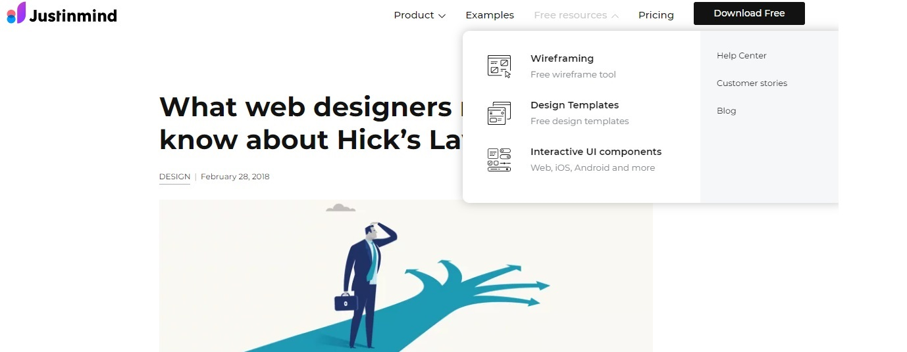
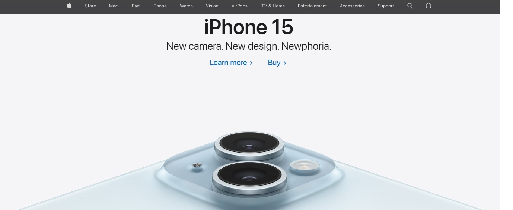

examples
Visual hierarchy

- The company who uses this website is CNN.
- https://www.cnn.com/
-
This website uses visual hierarchy by incorporating size and position on the screen, the main
story is giant and on the left (the side we start reading) and gradually gets smaller until
no images are even used to promote the story on the far right
Hicks Law

- The company who uses this website is justinmind.
- https://www.justinmind.com/blog/what-web-designers-need-to-know-about-hicks-law/
-
This website uses Hicks law by having the task bar only having 4 things to select from,
also in the drop down bars there is still only a few options to select from.
White Space and Clean Design

- The company who uses this website is Apple.
- https://www.apple.com/
-
This website uses White Space and Clean Design in their pictures, their pictures are not crowded
and they use the white space to draw the eye into the important things they are promoting.